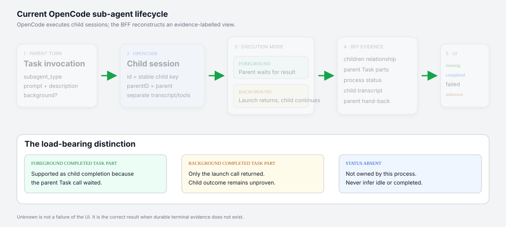

Child session ID
Stable key across resumed Task parts. The child has a separate transcript and `parentID`.
OpenCode creates and runs them. The BFF reconstructs what it can prove from relationships, Task parts, process status, transcripts, and heuristic hand-backs.
Stable key across resumed Task parts. The child has a separate transcript and `parentID`.
Strong positive process evidence. Absence says nothing terminal.
Strongest asynchronous completion/failure evidence when probed.
Correct when no durable terminal evidence exists.

The browser always submits the parent through `prompt_async`. Toggle the Task relationship to see what the parent waits for and what “completed” means.
Toggle facts to run the pure state resolver. Notice that a completed background Task part alone remains unknown.
Nested sessions, `sub` pills, child counts, running status.
Raw invocation status, agent/model, output, child link.
Likely synthetic user-role prose rendered as a status row.
Parent breadcrumb and explicit “does not reach parent” warning.
Derived state, evidence, Stop, promotion, truncation.
| Surface | Refresh model | Important limitation |
|---|---|---|
| Conversation | 3s HTTP poll + SSE nudge | SSE has no replay |
| Subagents panel | 10s only while running/launched | Settled/unknown stops polling |
| Hub | 10s session poll | 100-session cap, no truncation indicator |
| Notifications | Persisted audit history | Child delivery suppressed by default |
Only launch returned. Wait for child final turn, process status, or a recognized hand-back.
Do not call child completedProcess ownership is absent. Sessions/transcripts may survive restart; running state does not.
Do not infer idleThe connected process does not positively report the child busy, so cancellation authority is unavailable.
Inspect transcriptParent Plan history may have affected child permissions. Stop and use a fresh Build-only parent.
Do not weaken policyThe 12-child transcript probe budget may be exhausted. Open the child directly and note truncation.
Bounded reconciliationServer and client signatures differ. Verify the known child ID, delegation wording, and outcome.
Heuristic bridgeserver/opencode/subagents.ts
server/opencode/sessions.ts
server/routes/sessions.ts
client/lib/events.ts
client/lib/subagents.ts
client/components/subagent-panel.tsx
tests/subagents.test.ts
tests/e2e/subagents.api.spec.ts
tests/e2e/subagents.ui.spec.ts